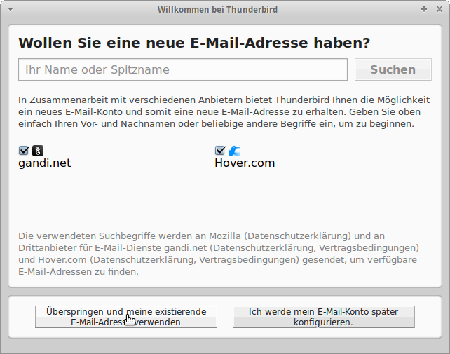
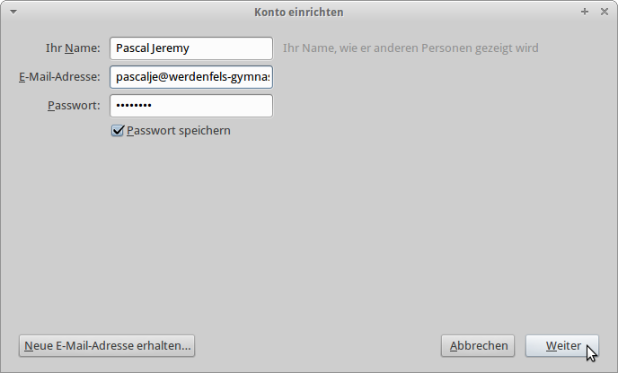
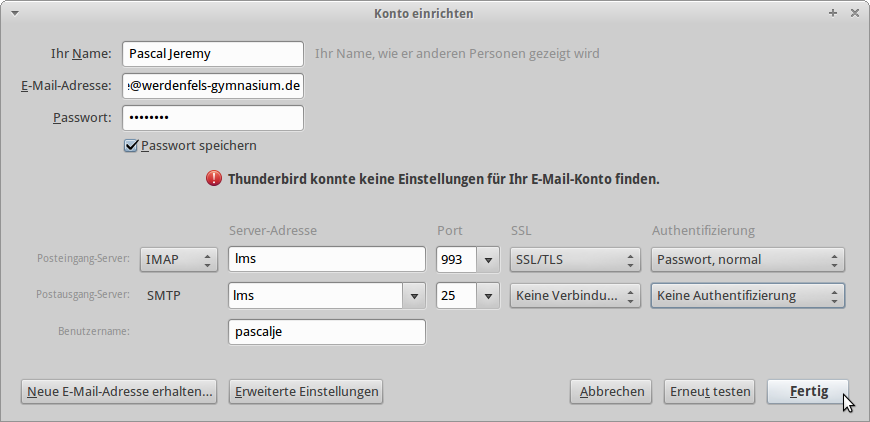
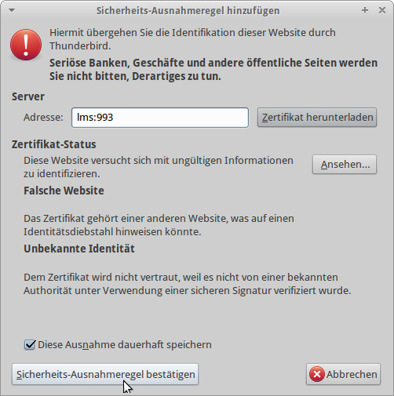
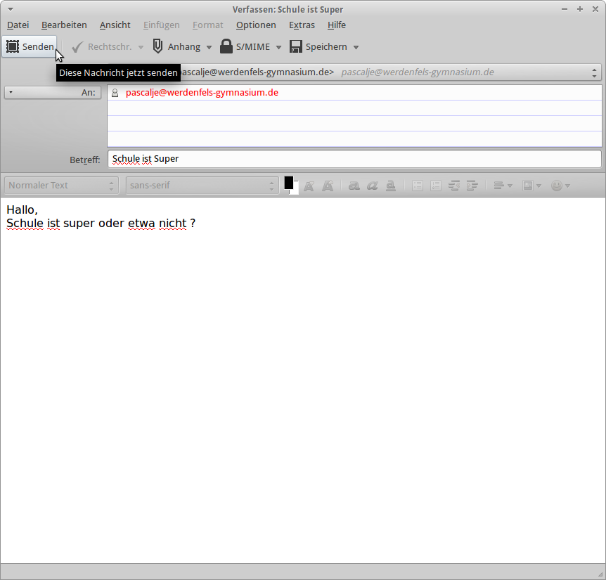

Thunderbird Konto einrichten
Schritt 1. Öffne Thunderbird

Schritt 2. Klicke auf Überspringen und meine existieren eMail-Adresse verwenden

Schritt 3. Zuerst muss man seinen Absendernamen eingeben,
dann gibt man seine eMail-Adresse der Schule ein,
diese ist gefolgt aufgebaut:
Username@werdenfels-gymnasium.de

Schritt 4. Übertrage die Manuellen Einstellungen, welche in dem oberen Bild zu sehen sind.
Danach klicke auf Fertig. Nun akzeptiere die kommende Risiken-Meldung.

Schritt 5. Akzeptieren sie die Sicherheits-Ausnahmeregel um fortzufahren.
Schritt 6. Wenn Sie testen wollen, ob die einrichtung erfolgreich war, dann klicken Sie Links Oben auf Verfassen

Schritt 7. Geben Sie die Empfänger Adresse, den Betreff, und die Nachricht ein und klicken Sie auf Senden
Nun haben Sie alles Erfolgreich eingerichtet.